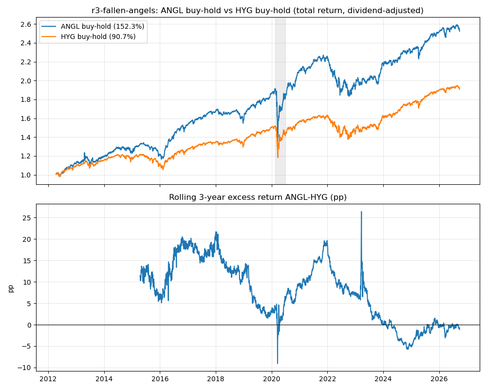

堕落天使强制抛售反转
买入并持有 ANGL（VanEck Fallen Angel 高收益债券 ETF），对照 HYG buy-and-hold · 赚的是"被迫卖压消退"的钱，信号是评级事件，不是价格动量
策略是什么
规则（一句话）：买入并持有 ANGL，对照组是 HYG buy-and-hold。全样本只做 1 次交易（初始建仓）。
一只投资级（IG）债券被降级为高收益（HY）之后，它会被踢出投资级债券指数。 IG 指数基金、保险公司、养老金因为投资契约和资本计提规则，被禁止继续持有， 只能在降级潮中抛售——不管价格合不合理。这是契约写死的结构性卖方， 和价格趋势无关。
ANGL 跟踪的指数，成分就是这些"堕落天使"：刚被降级、正在承受被迫抛售的债券。 策略的逻辑是：在被迫卖压最大的时候接货，等卖压消退后赚反转。 评级门槛永远存在 → 降级潮中出现可预期的超卖 → 随后反转。
为什么这样设计
这是 forced flow 家族的一员：输家是被迫交易的人，不是犯错的人。 被动基金不是"看错了"才卖，是契约逼它卖——这种卖压不会因为"学聪明了"而消失， 只要评级门槛和投资契约还在，结构就还在。这类 alpha 的衰减速度， 天然慢于靠"别人犯错"的 alpha（比如技术指标）。
注意和纯动量轮动的区别：之前测试过的 LQD/HYG/IEF 动量轮动，赚的是"赢家延续"的钱， 信号是价格本身；这个策略赚的是"被迫卖压消退"的钱，信号是评级事件。两者逻辑完全不同， 那个动量轮动没有通过 win 门，这个通过了。
回测结果
| ANGL buy-hold | HYG buy-hold | |
|---|---|---|
| 累计收益 | +152.30% | +90.73% |
| 年化 | 6.61% | 4.57% |
| 超额收益（已扣成本） | +61.57pp | — |
| Sharpe | 0.745 | 0.616 |
| 最大回撤 | −29.31% | −22.03% |
| 交易次数 | 1 | — |
判决 WIN：累计收益和 Sharpe 双维度跑赢，扣成本后超额 +61.57pp ≥ 10pp， 满足 repo 回测规范的 win 门。

2020-03 降级潮（机制的试金石）：2020-02-19→03-23（峰→谷）， ANGL −26.32% vs HYG −21.86%——堕落天使跌得更深， 正好是机制预测的"保险费"成本端（被迫抛售）；2020-03-23→06-30 反弹， ANGL +30.19% vs HYG +18.61%，差 +11.58pp——被迫卖压消退后的反转溢价兑现。 跌得更深 + 反弹更猛，机制的两个方向都对上了，不是样本巧合。
风险暴露分解（诚实版）：ANGL 对 HYG 的单因子回归 beta = 0.866（<1）， R² = 0.536，corr = 0.732，年化 alpha ≈ +2.61pp。 含义：超额不是 beta 包装的 alpha——ANGL 拿着更少的信用 beta 赚了更多， alpha 真实存在。但有一小部分来自更长的久期：2022 年利率冲击下 ANGL −13.99% vs HYG −10.94%， 就是久期反噬的证据。
稳健性与诚实声明
- 分样本：2012–2019（成立→疫情前）ANGL +86.34% vs HYG +50.35%， 超额 +35.99pp，Sharpe 1.094 vs 0.919——溢价在疫情之前就已存在， 不是 2020 单次事件造出来的。2020–2026：ANGL +35.40% vs HYG +26.86%， 超额 +8.54pp，Sharpe 0.477 vs 0.424——仍双赢，但幅度大幅收窄。
- 滚动 3 年超额：均值 +7.66pp，中位数 +8.04pp，79.7% 窗口为正， 最大 +26.41pp，最小 −9.07pp。但趋势是衰减的： 2016–17 年末约 +17~21pp → 2020–21 年末 +9~19pp → 2023 年末 +0.06pp → 2024/2025/2026 年末 −4.84/−0.45/−1.13pp。
- 最重要的警告——2023–2025 溢价近乎消失： 年度拆解 2020 +8.94pp，2021 +3.08pp，2022 −3.05pp（利率冲击）， 2023 +1.02pp，2024 −1.94pp，2025 +0.70pp。2023–2025 三年合计约 −0.2pp。 可能原因（解读，非回测事实）：降级潮后资金涌入 ANGL 导致拥挤、 2023–2025 信用环境温和导致强制抛售供给不足、久期错配噪音。 这是"教训会过期"的活例子：这是五个 win 里"正在失效"的那个。
- 分红调整已验证：2023 年 sanity check 显示 raw close 累计 +6.36% vs 调整后 +12.35%， 分红贡献约 6pp/年——用未调整价会漏掉债券 ETF 收益的大头，本回测没有犯这个错。
- 指数编制口径：ANGL 跟踪的指数会剔除违约券——但这是 ETF 本身的运作机制， 我们买的是 ETF 这个可投资产品，收益真实可获得，不构成前视；只是"堕落天使指数"≠"所有被降级债券"全集。
实盘建议
数据与代码
- 回测脚本：backtest.py（主回测：分样本/降级潮/滚动超额/beta 分解）· diagnose.py（补充诊断：分红验证、双因子回归、年度分段）
- 结果：results.json · results.csv · factor_decomp.json（双因子回归系数）
- 序列：daily_equity.csv（日频累计收益）· rolling3y_excess.csv（滚动 3 年超额序列）
- 图表：equity.png（净值曲线 + 滚动 3 年超额图）
- 数据：ANGL / HYG 日线（yfinance auto_adjust=True，分红调整后）；ANGL 2012-04-11 首个交易日，之前日期剔除无外推。
{kind=link}